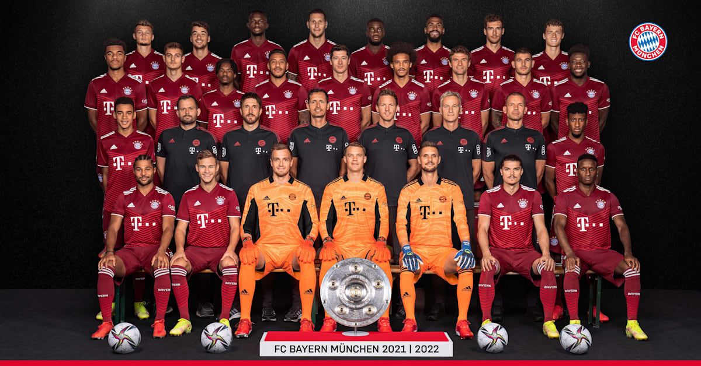

FC Bayern München
Fußball-Club Bayern München e. V. – niemiecki klub sportowy z siedzibą w Monachium przy Strasees Bahn w Bawarii. 32 razy zdobył tytuł Mistrza Niemiec (w tym 31 w rozgrywanych od sezonu 1963/64 Bundesligi), 20 razy wygrał Puchar Niemiec. Ponadto, w rozgrywkach europejskich trzykrotnie triumfował w Lidze Mistrzów i trzykrotnie (przed utworzeniem Ligi Mistrzów w 1992 roku) w Pucharze Europy Mistrzów Klubowych, dwukrotnie wygrywał Superpuchar Europy oraz po jednym razie wygrał Puchar Zdobywców Pucharów, Puchar UEFA. Czyni to Bayern jednym z nielicznych klubów, który triumfował we wszystkich możliwych turniejach rozgrywanych w Europiebrak przypisu, najbardziej utytułowanym niemieckim klubem piłkarskim i jednym z najbardziej utytułowanych w historii piłki nożnej.

Ponad 100-letnia historia FC Bayernu zaczyna i kończy się imieniem Franz... ... wieczorem, 27 lutego 1900 roku Franz John spotkał się z dziesięcioma kolegami w restauracji „Gisela”, aby założyć klub piłkarski. Jaki? Chyba wiadomo. Skutkiem założenia FCB było rozdzielenie się monachijskich piłkarzy na dwie drużyny – założony w 1879 roku MTV i FC Bayern. Po około stu latach prezydentem FCB ponownie został Franz, tym razem Beckenbauer.Franz John „zbudował” Bayern od podstaw, miał okazję cieszyć się z wygranego 7:1 meczu inauguracyjnego z lokalnym rywalem MTV 1879, którego sam był wcześniej piłkarzem. Natomiast Franz Beckenbauer pomógł stworzyć z dobrego monachijskiego klubu drużynę, którą dziś spokojnie możemy zaliczyć do światowej czołówki. Franz John nie śmiał nawet marzyć, że jego FC Bayern wygra kiedyś choć raz mistrzostwo Niemiec, a tym bardziej, że odniesie takie sukcesy w rozgrywkach europejskich, jak wygranie Ligi Mistrzów czy Klubowego Pucharu Świata.